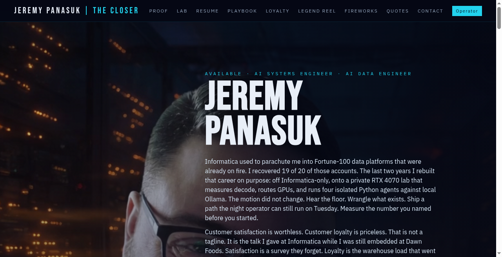
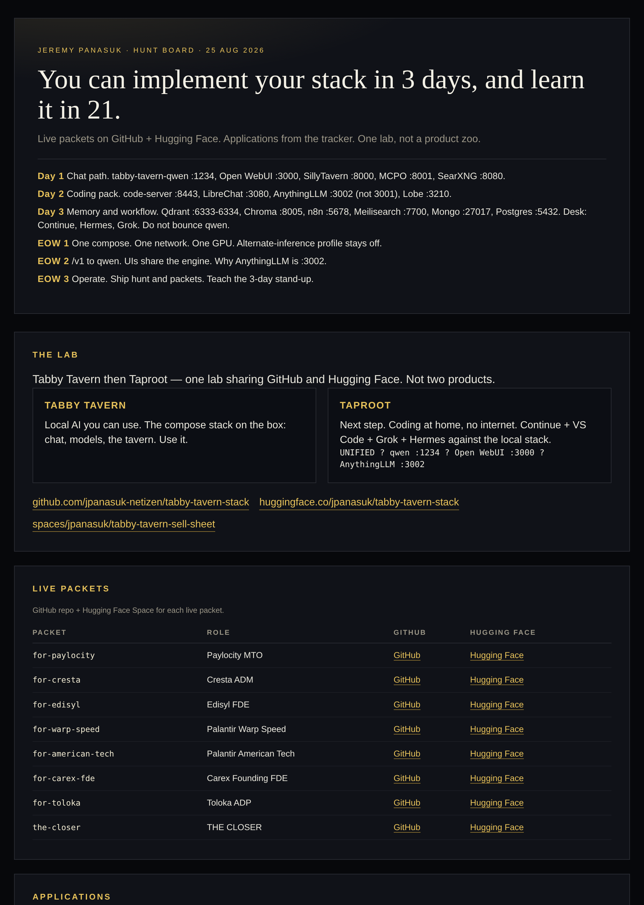
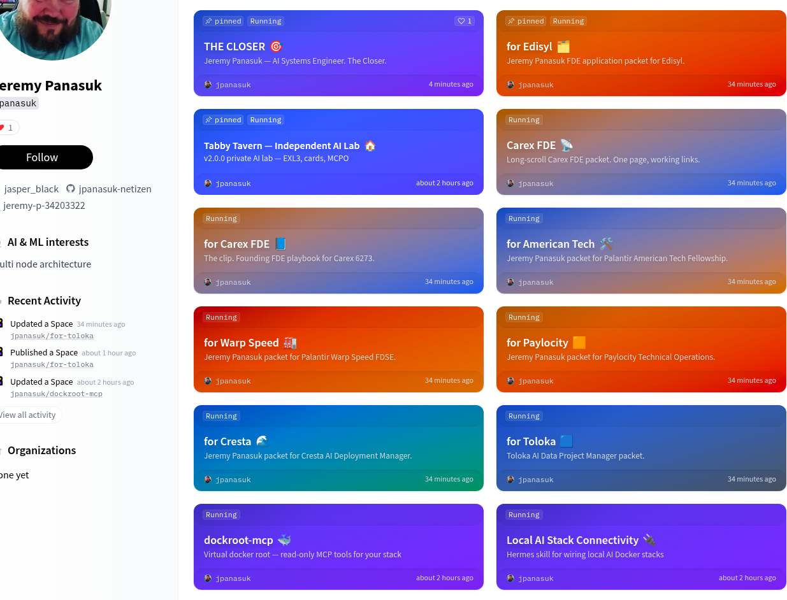
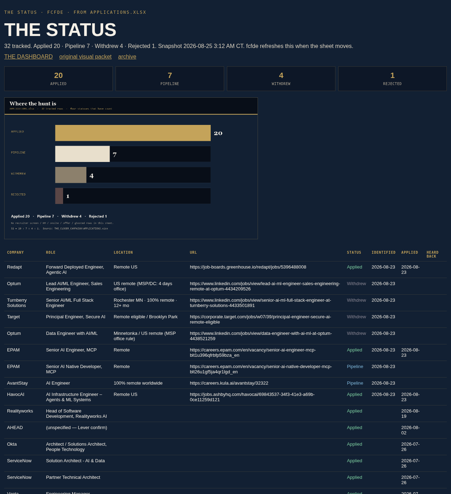
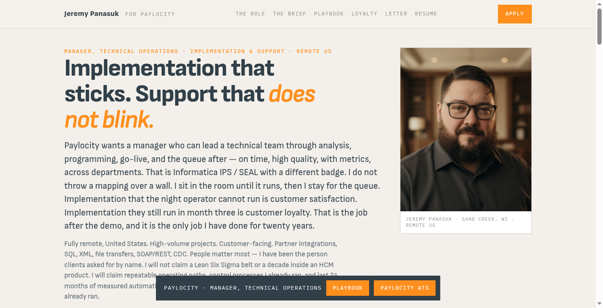
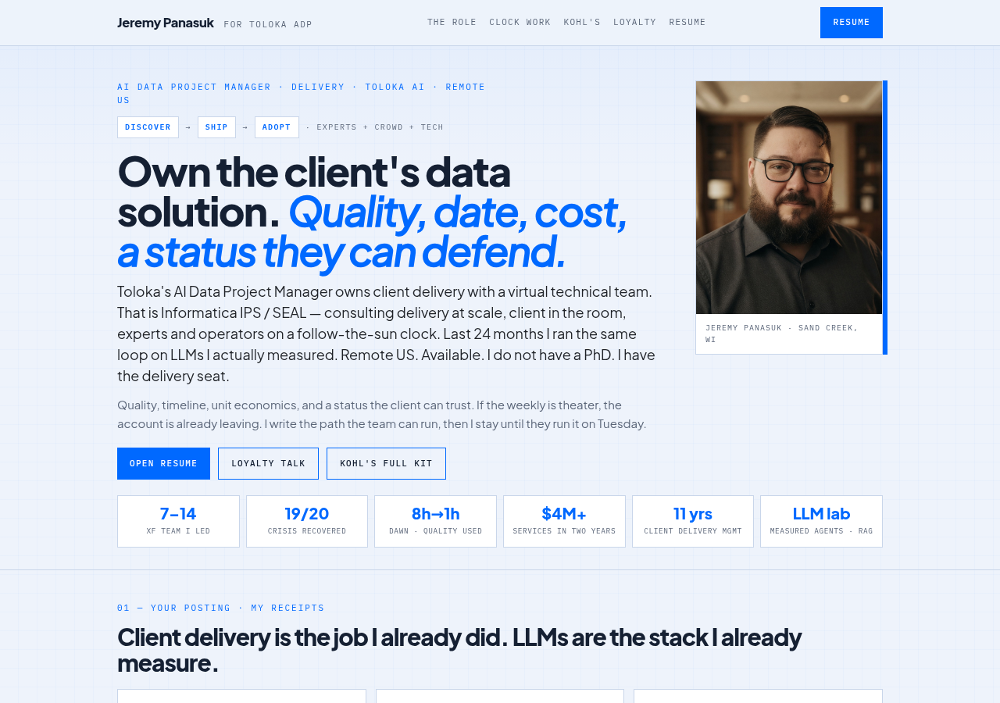
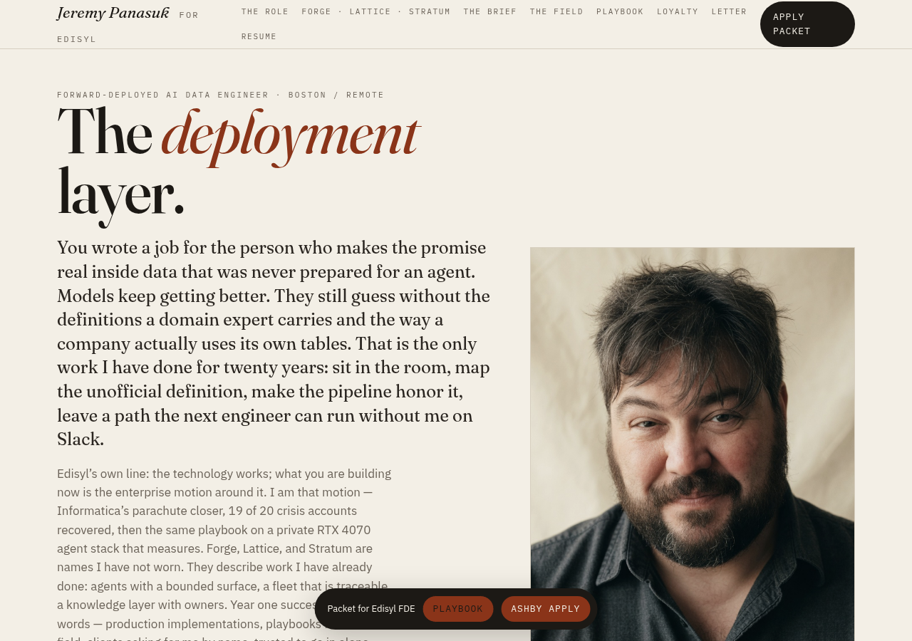
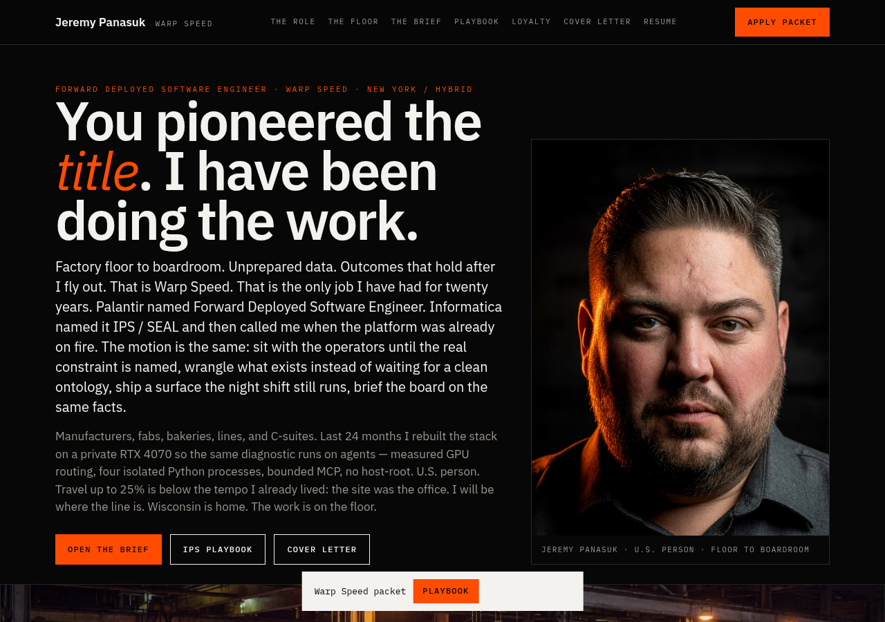
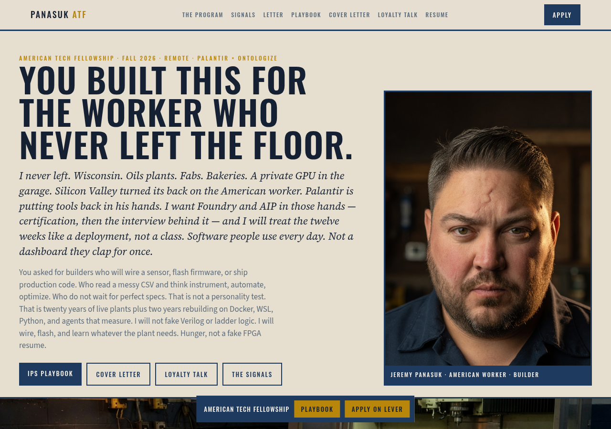

Day 1 · Chat path
Bring UNIFIED up as chat. qwen is on :1234; the prompt travels from the UI to the engine and back. Do not stand up a second inference server.
qwen :1234Open WebUI :3000SillyTavern :8000MCPO :8001SearXNG :8080The canonical packet connects the production floor, the private RTX lab, the unified stack, the live hunt, and the application packets. It is not a product zoo and it is not a slide pretending to be an operating system.
Every UI shares the same /v1 engine.
Bring UNIFIED up as chat. qwen is on :1234; the prompt travels from the UI to the engine and back. Do not stand up a second inference server.
qwen :1234Open WebUI :3000SillyTavern :8000MCPO :8001SearXNG :8080Add the desk against the same engine. The port correction matters: AnythingLLM is :3002, not :3001.
code-server :8443LibreChat :3080AnythingLLM :3002Lobe :3210Hang state and automation off the path. Keep qwen up while the operator learns where memory, search, and workflow state live.
Qdrant :6333–6334Chroma :8005n8n :5678Meilisearch :7700Mongo :27017Postgres :5432Projected plan, not a status log.
EOW 1: understand why a second compose fights for VRAM. EOW 2: explain the shared contract. EOW 3: operate the stack and teach it without notes. Optional add-ins come after day 21.
Concrete boundaries, not vague AI experience.
/v1.GitHub + Hugging Face twins from the handoff.
| Packet | Role | GitHub | Hugging Face |
|---|---|---|---|
for-paylocity | Paylocity MTO | repo | space |
for-cresta | Cresta ADM | repo | space |
for-edisyl | Edisyl FDE | repo | space |
for-warp-speed | Palantir Warp Speed | repo | space |
for-american-tech | Palantir American Tech | repo | space |
for-carex-fde | Carex Founding FDE | repo | space |
for-toloka | Toloka ADP | repo | space |
the-closer | THE CLOSER | repo | space |
Source: APPLICATIONS.xlsx snapshot used by THE STATUS.
Applications with a recorded confirmation: Gmail, Lever, Ashby, Indeed, or LinkedIn sent.
Tracked opportunities not yet counted as applied.
Total snapshot: 32 tracked. No recruiter screens, hiring-manager loops, onsites, offers, or ghosts counted in that breakdown.
The full application table remains in hunt.html. This packet does not convert a projected plan into a completed outcome.
All nine supplied screenshots are carried forward here.









Keep the distinctions honest.
:1234, shared /v1.Review the packet, then follow the receipts.